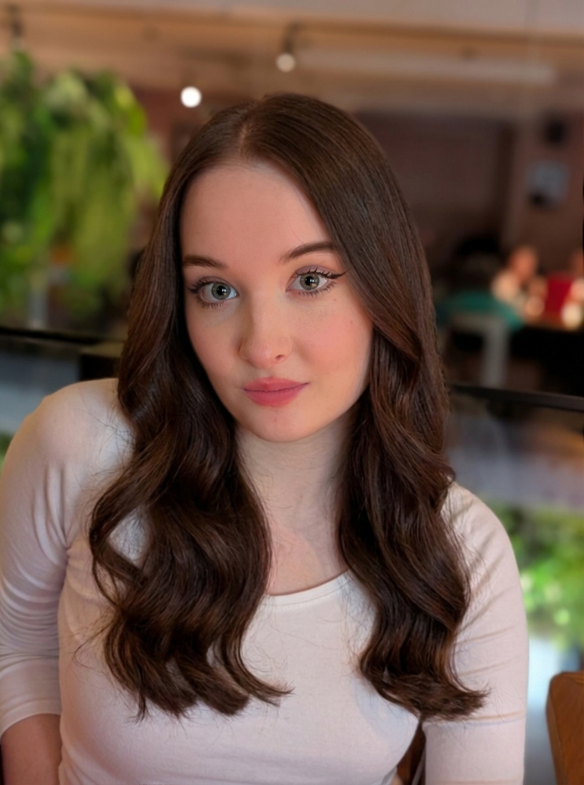

ВИКТОРИЯ
ГРАФИЧЕСКИЙ ДИЗАЙНЕР

Создаю коммерческий статический дизайн для бизнеса: от баннеров для соцсетей и рекламных креативов до айдентики, упаковки и многостраничной полиграфии. Разрабатываю визуал, который привлекает внимание и решает задачи продаж.
Смотреть проекты ↓